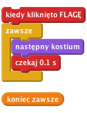

Jednoręki bandyta
Poziom 2
Prosta gra z trzema duszkami, które się zmieniają w trakcie gry. Jeżeli po zatrzymaniu wszystkie duszki wyglądają tak samo – gratulacje! Tak jak w jednorękim bandycie, takie same duszki wygrywają.
Zaimportujmy potrzebne obrazki do gry
Skoro mamy już kostiumy, teraz sprawmy, aby duszek nosił je wszystkie na zmianę.

Kliknij zieloną flagę.
Czy kostiumy zmieniają się z rozsądną szybkością?
Zmień ilość sekund w bloku "czekaj". Jak myślisz, przy jakiej wartości gra stanie się zbyt prosta, a przy jakiej wartości będzie za trudna?
Świetnie! Potrafimy już sprawić, aby kostiumy duszka zmieniały się w nieskończoność, ale jak zrobić, aby zatrzymały się, kiedy na niego klikniemy?
Kliknij zieloną flagę, poczekaj chwilę i kliknij na duszka.
Czy duszek zmienia kostium, zanim na niego klikniesz?
Czy duszek zatrzymuje się po kliknięciu?
Uruchom skrypt jeszcze raz.
Czy duszek zatrzymuje się, jeżeli najedziesz na niego kursorem myszki, ale nie klikniesz? Czy zatrzymuje się, jeżeli klikniesz gdzie indziej na Scenie? Gdzie indziej w oknie Scratcha? A gdy klikniesz gdzieś poza oknem Scratcha?
Teraz potrzebujemy stworzyć dwa inne duszki, abyśmy mogli zagrać w naszą grę!
Kliknij zieloną flagę.
Wszystkie duszki powinny się zmieniać. Spróbuj zatrzymać je na tym samym obrazku!
Gdy zaczynasz grę, wszystkie duszki pokazują ten sam kostium i zmieniają się razem w taki sam sposób. Może spróbuj to zmienić tak, aby kostiumy zmieniały się losowo po wciśnięciu flagi?
Wskazówka: spróbuj wylosować strój dla każdego duszka po rozpoczęciu gry.
Brawo! Udało ci się skończyć podstawową wersję gry! Jest jeszcze kilka rzeczy, które możesz zmienić w grze. Zmierz się z poniższymi wyzwaniami!
Zwiększmy poziom trudności gry. Zwiększenie prędkości, z jaką zmieniają się obrazki, jest najprostym rozwiązaniem. Spróbuj czegoś bardziej wyszukanego. Oto kilka pomysłów, które mogą ci się spodobać:
Baw się dobrze, wymyślając swoje własne modyfikacje!
Za każdym razem, jak coś zmieniasz, zastanów się, jaki ma to wpływ na poziom trudności gry. Czy gra robi się łatwiejsza czy trudniejsza? Jak możesz zmienić poziom trudności tak, aby był w sam raz?
Różni ludzie różnie sobie radzą z grą. Jak możesz zmodyfikować grę, aby dopasowywała swój poziom trudności do zdolności gracza?
Jednym z rozwiązań jest dopasowanie prędkości, z jaką zmieniają się kostiumy. Możesz dodać zmienną o nazwie opóźnienie, aby kierować blokiem "czekaj". Jeżeli gracz wygra rundę, opóźnienie może się zmniejszyć (co podniesie nieco poziom trudności gry). Jeżeli gracz przegra rundę, opóźnienie może wzrosnąć, co ułatwi nieco grę.
Celem gry jest takie kliknięcie na duszki, aby zatrzymały się wszystkie pokazując ten sam kostium. Byłoby fajnie, gdyby Scena potrafiła wykryć, kiedy runda się skończyła i jaki był wynik gry. Scena mogłaby sprawdzać, czy wszystkie duszki są takie same.
Po pierwsze, Scena musi wiedzieć, kiedy gracz skończył. Aby to zrobić, musi sprawdzać, czy wszystkie duszki przestały się ruszać po kliknięciu na jednym z nich. Zmodyfikuj blok "kiedy kliknięto Duszek" dla każdego duszka i nadawaj komunikat "sprawdźCzyKoniec".
Scena może odpowiedzieć na ten komunikat i sprawdzić, czy gra się skończyła, sprawdzając czy zmienna "zatrzymano" jest ustawiona na 1 dla wszystkich duszków. Możemy do tego użyć bloku "współrzędna x z Duszek" dla każdego duszka i zamienić "współrzędną x" na zmienną "zatrzymano". Jeżeli wartość zmiennej "zatrzymano" jest równa 1 dla wszystkich duszków, wówczas wiemy, że gra się skończyła i możemy sprawdzić czy gracz wygrał.
Użyjmy w tym celu tego samego bloku "współrzędna x z Duszek", ale zamiast sprawdzać wartość zmiennej "zatrzymano", możemy sprawdzić numer kostiumu i upewnić się, że kostium Duszka1 jest taki sam jak Duszka2, i że kostium Duszka2 jest taki sam jak Duszka3.
Żeby to zrobić, użyjemy bloku "jeżeli", który będzie sprawdzał każdą zmienną "zatrzymano", a wewnątrz niego bloku "jeżeli... w przeciwnym przypadku", który będzie porównywał numery kostiumów, aby upewnić się, czy gracz wygrał.
Możesz teraz ogłosić wynik gry, korzystając z nadawania komunikatów, które mogą zostać odebrane przez innego duszka. Na przykład, Feliks mógłby pojawić się i pogratulować graczowi.
Brawo! To by było na tyle, teraz możesz się cieszyć swoją grą!
Nie zapomnij, że możesz podzielić się swoją grą ze swoimi przyjaciółmi i rodziną. Żeby to zrobić, kliknij menu Udostępnij.